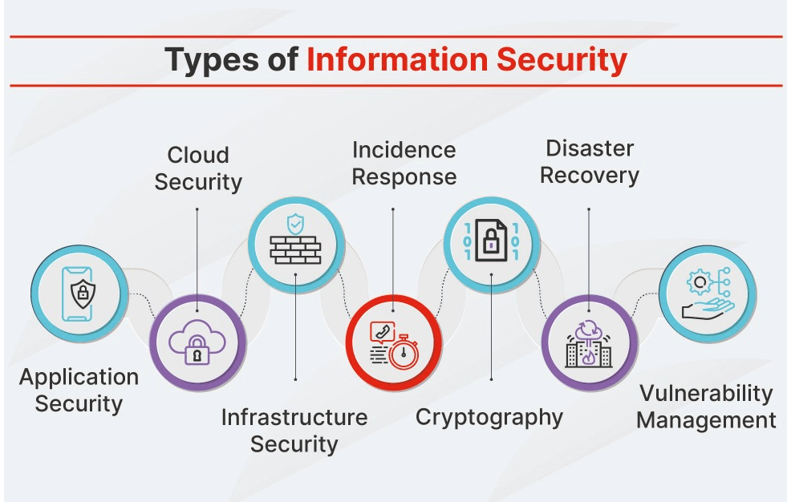
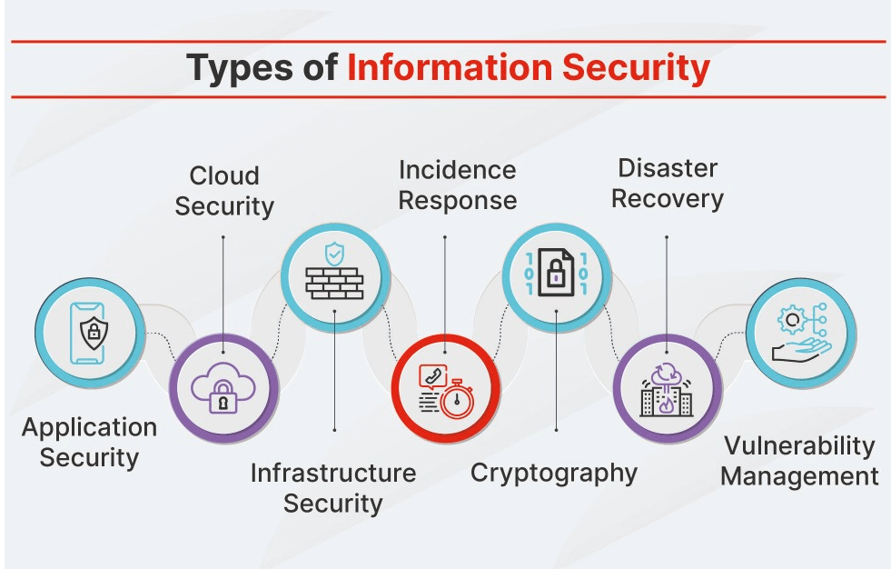
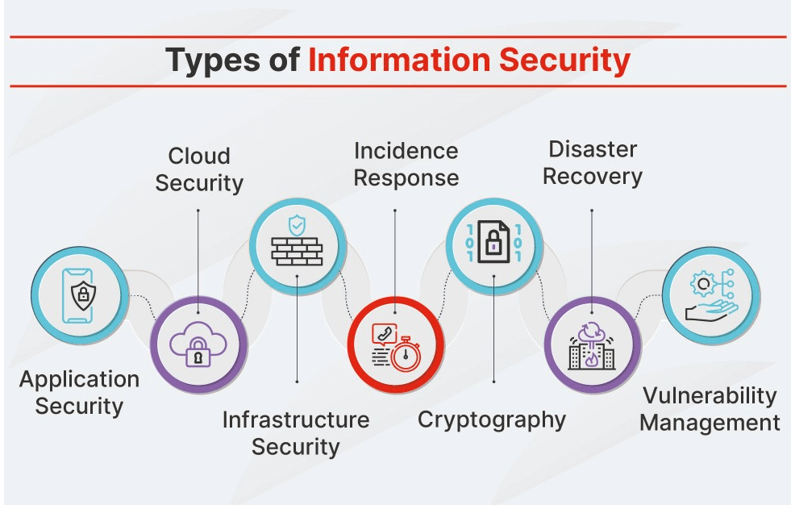

Information security refers to the practices and processes designed to protect sensitive data from unauthorized access, disclosure, alteration, or destruction. Its primary goals are confidentiality, integrity, and availability, often referred to as the CIA triad. With the rapid growth of digital data and interconnected systems, ensuring information security has become essential for individuals, organizations, and governments. This field includes various techniques and tools such as firewalls, intrusion detection systems, encryption, authentication mechanisms, and access control policies, all aimed at preventing cyber threats like hacking, phishing, malware, and data breaches.
Information security not only involves protecting data from external cyber threats but also from internal risks such as employee negligence or insider attacks. It encompasses physical security measures like surveillance and restricted access, as well as digital safeguards such as encryption, multi-factor authentication, and regular software updates. In today’s environment, where organizations handle vast amounts of sensitive data including personal information, financial records, and intellectual property regulatory compliance (such as GDPR, HIPAA, and ISO standards) is also a critical part of information security. Building a strong security culture within an organization, through employee training and clear policies, is equally vital to ensure ongoing protection against evolving threats.

| Feature | Symmetric Cryptography | Asymmetric Cryptography |
|---|---|---|
| Key Used | Same key for encryption and decryption | Public key for encryption, private key for decryption |
| Speed | Faster and efficient | Slower due to complex computations |
| Security | Less secure if key is shared | More secure due to separate public/private keys |
| Key Sharing | Requires secure channel to share key | No need to share private key |
| Use Case | Ideal for encrypting large data | Best for secure key exchange and digital signatures |
| Algorithm Examples | AES, DES, Blowfish | RSA, ECC, DSA |
| Key Length | Usually short (128 or 256 bits) | Longer keys (1024, 2048, or more bits) |
| Complexity | Simple algorithm design | More complex mathematical operations |